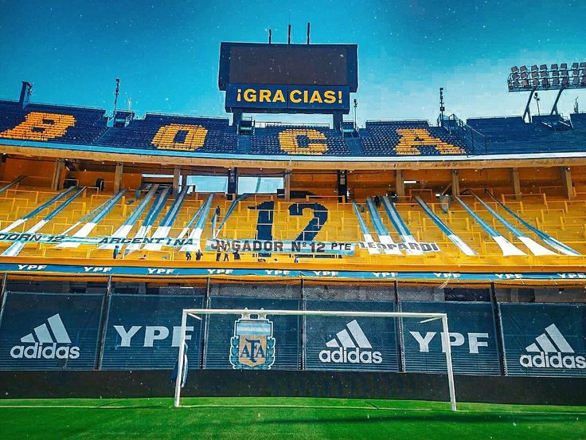

curiosidades de boca juniors
Boca Juniors es uno de los clubes de fútbol más reconocidos y exitosos de Argentina y del mundo entero. Su historia está repleta de momentos memorables, jugadores emblemáticos y una afición apasionada que lleva el apodo de "La Mitad Más Uno". En este artículo, exploraremos algunas curiosidades de Boca Juniors, desde sus orígenes hasta sus logros más destacados, pasando por su estadio y su relación con el arte y la cultura. Así que acompáñanos en este recorrido y descubre por qué Boca Juniors es mucho más que un simple equipo de fútbol.

sabias esto?
Boca Juniors es un club de fútbol argentino fundado en 1905. Es uno de los equipos más populares y exitosos de Argentina y de América del Sur. Boca Juniors ha ganado numerosos títulos nacionales e internacionales. El equipo juega sus partidos de local en el Estadio Alberto J. Armando, también conocido como "La Bombonera". Boca Juniors tiene una gran rivalidad con River Plate, con quien disputa el famoso "Superclásico" argentino.
la famosa bombonera...
¿Sabías que el estadio de Boca Juniors, La Bombonera, es uno de los estadios más famosos del mundo? Es conocido por su forma de caja de bombones y por ser uno de los lugares más difíciles para los equipos visitantes en el fútbol. Además, el estadio ha sido el escenario de muchos partidos importantes en la historia del fútbol, como la final de la Copa del Mundo de 1978.
de locos!!!
Los trofeos de Boca Juniors están en exhibición en el Museo de la Pasión Boquense en Buenos Aires. El museo tiene más de 50,000 objetos relacionados con la historia del club, incluyendo camisetas, medallas y otros recuerdos. Además, uno de los trofeos más emblemáticos de Boca Juniors es la Copa Libertadores, que han ganado seis veces. La Copa Libertadores es uno de los torneos de fútbol más importantes de América del Sur y es muy prestigiosa en todo el mundo.
¿Que significa el numero 12 en el estadio?
La 12 es una de las barras bravas más famosas del fútbol mundial. La barra brava de Boca Juniors fue fundada en 1960 y es conocida por su apoyo incondicional al equipo. Es también conocida por sus cánticos y por su creatividad en la elaboración de banderas y pancartas. Además, ha sido objeto de muchas historias y leyendas a lo largo de los años, lo que la convierte en una de las barras bravas más icónicas del mundo del fútbol. Otra curiosidad interesante sobre la 12 es que a menudo se la llama "La hinchada más popular de Argentina". Ha sido protagonista de muchos momentos importantes en la historia de Boca Juniors. Además, la 12 ha sido una de las barras bravas más activas en la lucha contra el racismo y la discriminación en el fútbol.